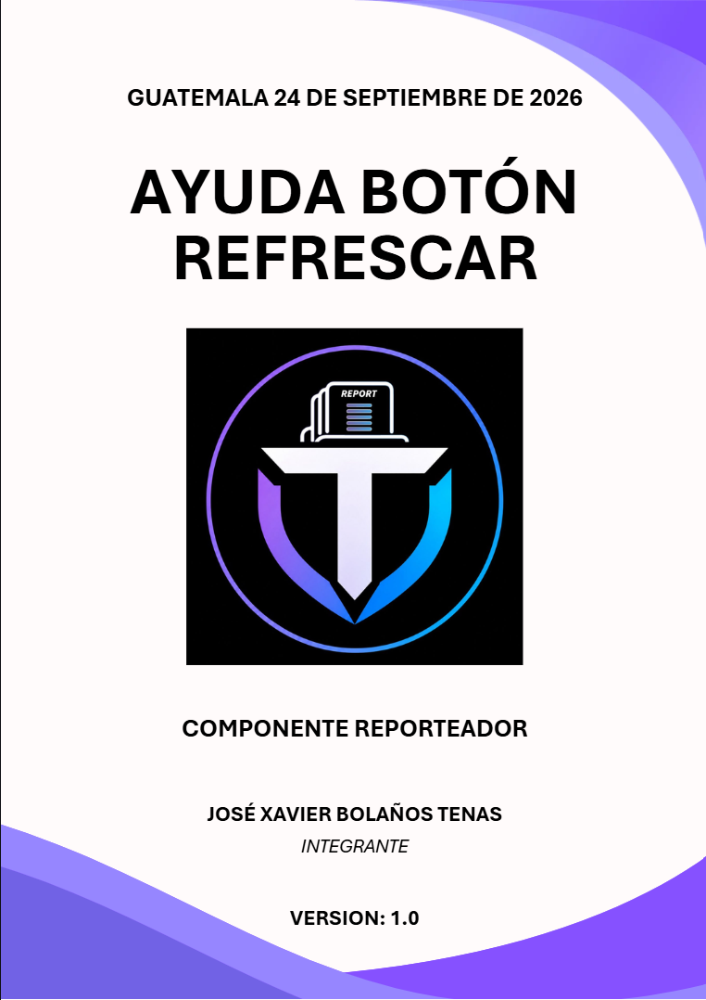
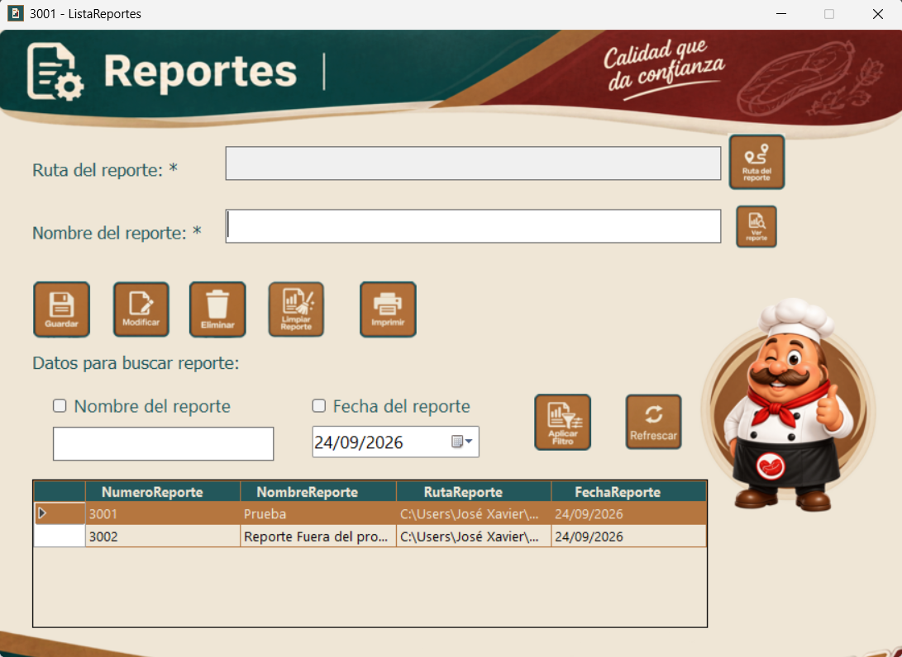
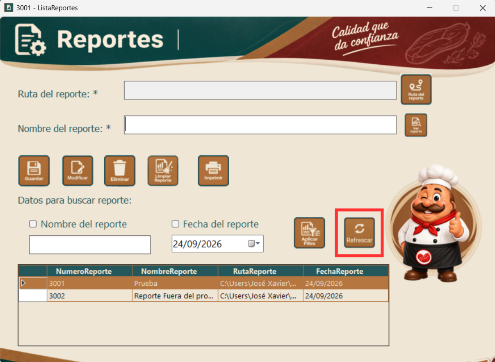
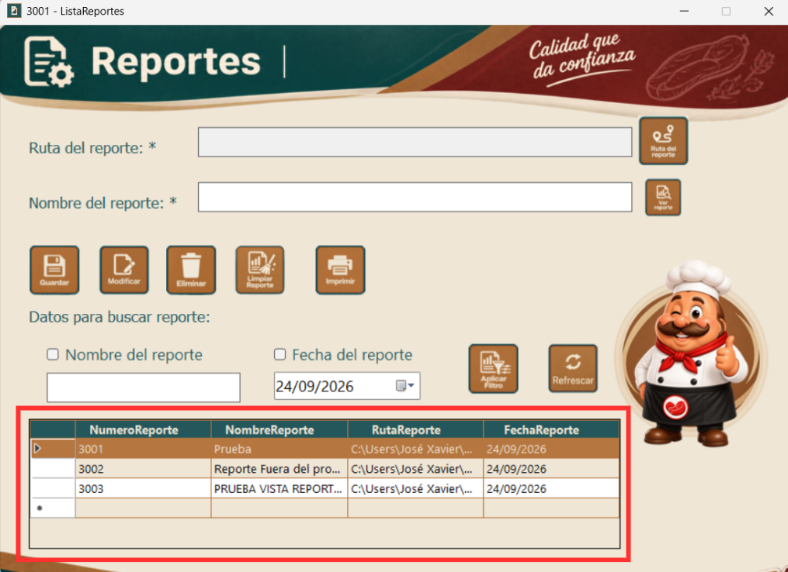

|
 |
| Integrante | Carne |
|---|---|
| Velveth Sarai Chavez Mejia | 0901-23-6269 |
| Nills Berducido Gomez | 0901-23-14275 |
| Brayan Moises Pinzon Lopez | 0901-23-10511 |
| Brian Andree De La Cruz Sosa | 0901-23-6124 |
| Gabriela Pinto Garcia | 9959-23-1087 |
| Carlos Eduardo Chin Caal | 0901-23-5686 |
| Jose Xavier Bolanos Tenas | 0901-23-2128 |
| Introduccion | ................................................ | 4 |
| Para que sirve | ................................................ | 5 |
| Como se utiliza | ................................................ | 6 |
| Localizar el boton | ................................................ | 6 |
| Hacer clic en Refrescar | ................................................ | 6 |
| Resultado de la actualizacion | ................................................ | 7 |
| Cuando utilizarlo | ................................................ | 8 |
| Situaciones a tener en cuenta | ................................................ | 9 |
En esta ayuda se explica el funcionamiento del boton Refrescar del modulo Reporteador. Este boton permite refrescar el listado de reportes para consultar la informacion mas reciente, mostrando el numero, nombre, ruta y fecha de cada reporte disponible.

El boton Refrescar permite refrescar el listado de reportes. Al usarlo, la pantalla vuelve a consultar la informacion disponible y presenta los reportes actuales con su numero, nombre, ruta y fecha.


Si el listado no esta disponible o existe un problema de conexion, el sistema mostrara un mensaje de error. Comprueba la conexion y vuelve a intentarlo.